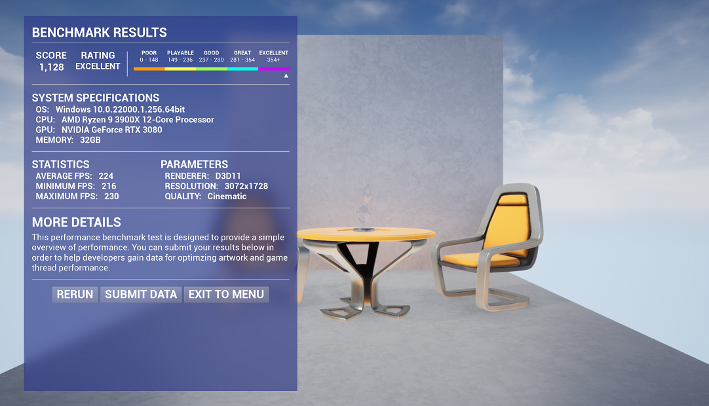

Home¶
The Performance Benchmark plugin is designed to be a simple, easy to use performance analysis tool geared for distribution to end-users.

Just picked up the plugin and want to know how to use it? Go to Setup to get started!
Features¶
- Drop-in Performance Benchmark Test Manager
- Scoring and Grading system, automatically calculated by Level Sequence frame time
- Grading system is configurable which is defined as target percentages
- Beautiful interface showcasing a quick overview of performance results and score
- C++ Functions to pull important system details such as Processor, Physical Memory, Graphics Card.
Planned Features¶
- Themes
- Presets
- Custom defined
- Adjustable Quality Presets
- GPU Driver detection and reporting
- Exportable Data
- Hook up to your own Analytics backend, third-party solutions or logged locally
Support¶
Need help with using the plugin? We can provide you with support via Discord.
Discord: http://discord.gg/warheadent
Support is limited to issues with the plugin contents itself (User Interface Widgets, TestManager) - Feedback is welcome!